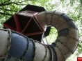
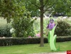
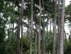
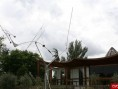
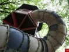
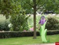
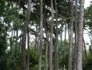
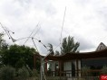

Le parc floral de Paris
- Route du Champ de Manoeuvre : 75012 Paris
- Tel : 01.49.57.24.84
- Métro : Château de Vincennes
- Ouverture : De 9h30 à 17h ou de 9h30 à 20h selon la saison
- Tarifs : De 0,50 à 3 euros
Situé en plein Paris, en bordure du bois de Vincennes, ce jardin botanique de renom étend ses collections sur près de trente-cinq hectares. Sa création remonte à la fin des années 1960 lors des troisièmes Floralies internationales.
Le parc est réputé pour ses collections riches de 3.000 variétés de plantes ainsi que pour ses jardins à thèmes, dont le jardin des plantes méditerranéennes, celui des bonzaïs ou encore le jardin des plantes médicinales. Après avoir déambulé parmi nombre de plantes exotiques et rares, le visiteur peut se rendre au service Paris-nature pour tout savoir sur l'agenda 'naturel' de la capitale ou bien au pavillon d'exposition et au jardin des papillons où sont présentées quelque quarante espèces.
 






